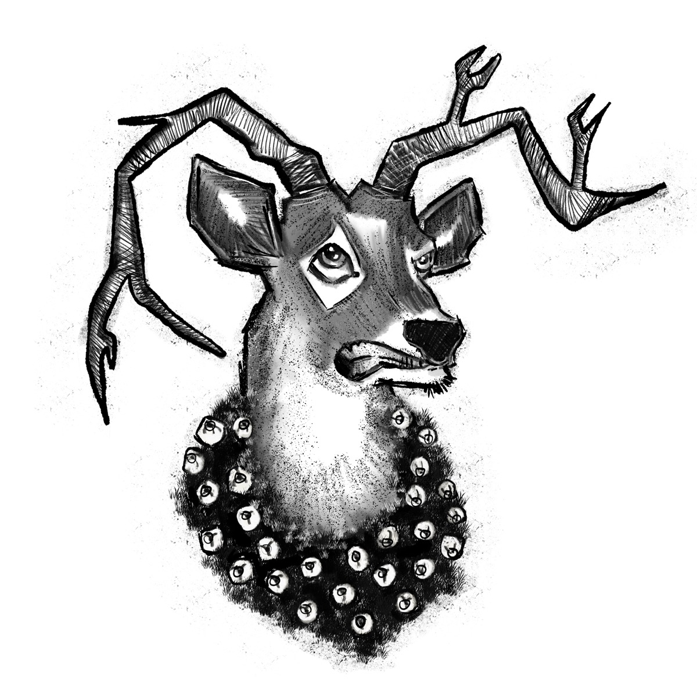
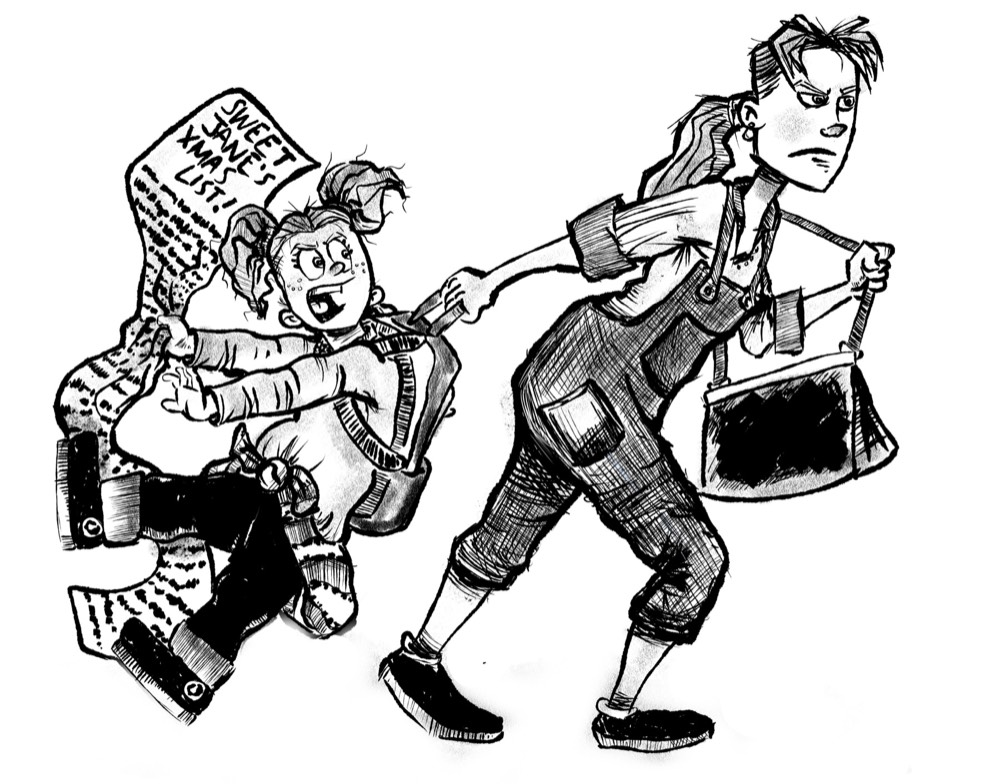

THE BLESSING BOX · LIV FULLER
Autistic?

Sunday, December 15
10 Days to Christmas
All Hugh wanted for Christmas was a dog. Fun fact: He had asked for one every single Christmas of his life—except for his first five years when he didn’t talk yet. By now, a dog of his own would be nothing short of a Christmas miracle.
At eleven years old, Hugh didn’t believe in Santa. But Dad was crystal clear. Santa doesn’t bring gifts to kids who don’t believe in him. The safe bet was to play along. So, Hugh put up with the bawling babies, squabbling siblings, and impatient parents all waiting in line to see Santa at Constance Town Mall.
“Hugh, what song is this?” Jane quizzed her big brother.
“I can barely hear it,” Hugh replied, having no interest in her stupid game. He usually tried to block out noise, not tune it in.
“I’ll give you a hint. It’s a Christmas song. Now name it,” Jane demanded.
No way. Hugh looked away.
Jane was three years younger than Hugh. But that didn’t stop her from bossing him—and everyone else—around. Mom defended Jane, saying she wasn’t bossy—she had leadership skills. Mom could say whatever she wanted. Jane was bossy. End of story.
“Hugh, are you going to ask Santa for a dog again this year?” Jane asked.
Hugh ignored her. He was too hot, but he couldn’t escape the heat of so many people packed together without losing his place in line. Hugh needed a cold gun like Mr. Freeze. He’d blow ice everywhere. Cool things off.
But without a cold gun handy, Hugh baked in the brand-new periwinkle sweater his mom made him put on before church that morning. Mom said the soft blue color made Hugh’s blond hair blaze and his sky-blue eyes pop. It also matched the rubber elastics on his braces, Jane had added rudely. Hugh scratched at the back of his neck. Mom forgot to cut out the tag. Ugh.
“Why do you want a dog so bad anyway? It’d probably bite you,” Jane said.
“George would never bite,” Hugh replied quickly.
“George? Who is that?” asked Little Miss Nosy.
Hugh couldn’t describe George—their special connection—even if he wanted to, which he didn’t. Hugh had met George six years ago when his kindergarten teacher, Miss Elin, introduced the class to a special visitor: a therapy dog.
George had short, smooth fur, the color of chocolate milk. He had soft amber eyes that glowed like warm fires. His magic-wand-tipped tail never stopped wagging. To Hugh’s happy surprise, of all the students, George chose Hugh. He ran by Hugh’s side at recess, curled up by his feet at story time, and used his tickly tongue to clean Hugh’s hands after snack. Lucky for George, Hugh was easily the messiest eater in class.
The next morning, Hugh couldn’t get to school fast enough. But when he arrived, George wasn’t there. Miss Elin said he wouldn’t be coming back. Heartbroken, Hugh cried so hard his mom had to come pick him up. He had wanted a dog ever since.
“Hugh, do you think you’re on the naughty list or the nice list?” Jane asked. He barely noticed her question. He was too busy daydreaming about George licking kindergartners’ fingers clean.
“Hugh, did you hear me? Do you think you’re on the naughty list or the nice list?” Jane repeated, louder this time. Mom was wrong. Ignoring Jane never made her go away.
Jane was as aggravating as the downy woodpecker that took to a porch beam last summer, tapping and tapping and tapping its beak against the wood until Dad nearly went mad. Fun fact: A downy woodpecker, the smallest and most common woodpecker in North America, could have a tongue up to four inches long—impressive, since the bird itself is only six to seven inches long. Jane was even red-headed like the woodpecker. In fact, her mass of fiery red curls put the downy’s small red spot to shame. Small creatures could be hugely annoying.
“I’m probably at the top of the nice list,” crowed Jane, perfectly comfortable carrying on a one-sided conversation. She pointed shamelessly toward the ruckus behind them. “What about those kids?”
A girl with a huge plaid hair bow messed with eight plastic reindeer. When she was done, their antler racks pointed down instead of up. The reindeer looked pitiful, as if too ashamed to fly anywhere.
“Naughty list,” Jane whispered in judgment.
Then, the boy next to her, wearing a plaid shirt that matched the girl’s hair bow, ripped off a carrot nose from a plastic snowman. Unexpectedly, the boy looked at Hugh, who looked down. Too late. The boy—whose body odor smelled vaguely like onions—approached Hugh. He pretended to smoke the plastic carrot like a cigarette, blowing imaginary smoke at Hugh, who caught a whiff of his ogre breath. The boy needed deodorant and a toothbrush for Christmas.
“Hugh, come here,” Mom said, softly putting her hands on Hugh’s shoulders and guiding him so that she stood between Hugh and the boy. She widened her stance—a mama bear wall of protection.
“Mom, are kids mean to Hugh because he’s artistic?” Jane asked loudly.
“What?” Mom asked, seeming confused.
“I heard you and Dad arguing last night. Dad said there’s nothing wrong with Hugh. But you said you think Hugh’s artistic,” Jane said.
“Not artistic. Autistic,” Mom said, the word seeming to slip from her mouth.
“What’s autistic?” Jane asked.
“Autistic? What’s that mean?” Hugh echoed under his breath.
“Is that why kids are mean to Hugh? Because he’s autistic?” Jane asked.
Before Mom could answer, an elf in candy-cane-striped tights and green pointy boots spoke to Hugh. “Your turn, young man.” Hugh had been so distracted by Jane’s antics that he hadn’t realized he’d made it to the front of the line. But before Hugh could blink, he felt the sharp pain of Jane’s elbow in his gut as she launched herself toward Santa’s gigantic throne.
“Ouch!” Hugh exclaimed, grabbing his side. Zap. His sweater gave him a static shock.
So not fair. Hugh was oldest. He should’ve gotten to see Santa first. Hugh watched glumly as his little sister plowed into Santa’s lap.
“Ho, ho, ho,” Santa managed after what must have felt like a human missile to the ribs. “What’s your name?”
“I’m Jane,” she answered eagerly. Her eyes, the same sky-blue as Hugh’s, studied Santa’s face with disapproval. “Your beard’s too short.”
Santa laughed. “Merry Christmas, Jane. Have you been a good girl?” Santa asked. Before he’d even finished the question, Jane was nodding so hard her curls bounced.
“How old are you, Jane?” Santa asked.
“I’m eight,” she answered eagerly.
“Well, Jane, what would you like to give for Christmas?” he asked.
Hold on. Did Santa just ask Jane what she would like to give for Christmas? Apparently so, given Jane’s response.
“You asked the question wrong, Santa. Do over,” Jane ordered.
Holy guacamole! Now Jane bossed Saint Nick around.
“Ho, ho, ho. Indeed,” Santa said, seeming flustered. He cleared his throat and tried again.
“Tell me, Jane, what would you like to give for Christmas?”
“Saaaantaaaa, stop joking. It’s not April Fools’ Day. It’s Christmas,” Jane said impatiently. “You’re not supposed to ask me what I want to give. You’re supposed to ask me what I want. Silly Santa.” Jane then proceeded to rattle off everything she wanted for Christmas. “I want a bat house. I also want a goldfish. Ignore my dad’s dumb rule about no pets in the house. And a drum set . . .”
“Go on,” the elf in the candy-cane-striped tights said to Hugh. “Your turn.”
Hugh couldn’t have taken but two steps toward Santa when, from Santa’s lap, Jane’s eyes narrowed. If looks could kill, hers would have stopped Hugh dead in his tracks. She didn’t want her turn with Santa to end. Fortunately, Mom must have noticed too. She grabbed Jane’s hand and pulled her away.
“Hello, son. What’s your name?” Santa asked. Fun fact: Hugh’s dad and Santa wore the same musky cologne.
“I’m Hugh,” he answered. Hugh desperately wanted to look away, but his dad had drilled into him the importance of eye contact.
Santa tapped his thigh, inviting Hugh to sit on his lap.
“No, thank you. I’m eleven. I’m too old for that. Besides, your lap needs a break after my sister,” Hugh said, glancing in the direction of Jane, who Mom was holding back. “My parents have their hands full with her.”
A smile snuck across Santa’s mouth. “Well, Hugh, tell me. What would you like to give for Christmas?”
Before Hugh could answer, Santa jumped out of his throne. Hugh jumped back.
“Holy sugarplums!” Santa cried, throwing his large arms questioningly in the air. “It happened again. Hugh, did you hear that? I asked what you want to give for Christmas.”
“Yes, sir. I heard,” Hugh answered timidly. Santa’s confusion made him nervous. After several long seconds, it was as if someone flipped a switch—Santa’s expression changed from foggy to clear.
“Ho! Ho! Ho! Hugh, something has been bothering me for months, but I haven’t been able to put my finger on what has been gnawing at me, until now. Thank you, Hugh,” Santa said, giving him an appreciative pat.
When Santa’s large, gloved hand came to rest on Hugh’s shoulder, Hugh got a good look at the brown leather band Santa wore around his wrist. Its red and green stones sparkled brightly in the light. Fun fact: Those red and green stones were the colors of the flag of Bangladesh.
Without warning, Santa pulled his hand away and spun around on his booted heel. “Cocoa and cookie break,” he said and dashed out of sight.
That’s when it hit Hugh. He hadn’t told Santa how desperately he wanted a dog, or that he’d settle for a GammaTron—the latest, most advanced gaming system—if he had to. Shoulders slumped, Hugh wandered over to Mom and Jane. With his rotten luck, perhaps he’d get exactly what he’d asked for—nothing at all.

© 2026 Liv Fuller. All rights reserved.
More magic
is on its way.
Expected November 1, 2026
Get a release notification ↗